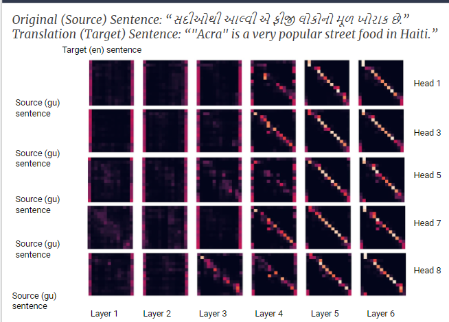
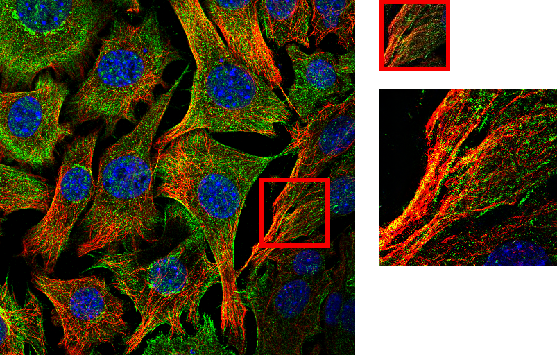
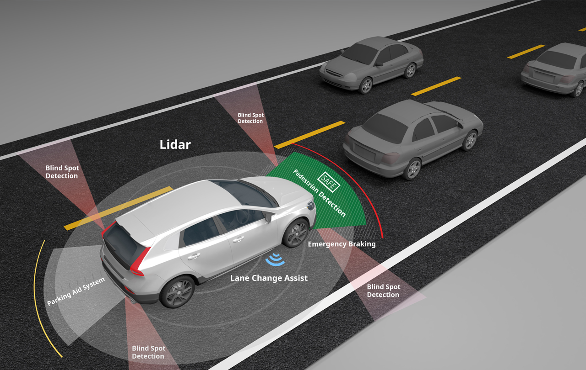
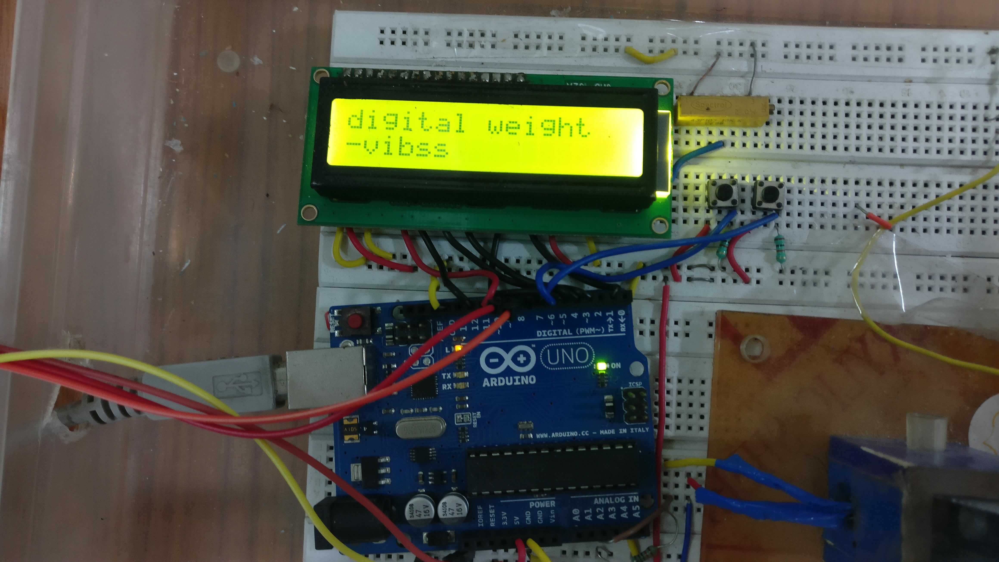

My Research

Active Learning with Sentence Error Classification in Machine Translation NLP Grad Research
We explore a model-based Active Learning method in Neural Machine Translation, for translating from two low-resource languages, Gujarati and Somali, to English, which utilizes the multi-headed multi-layered encoder-decoder attention weights of the Transformer architecture.

real-time Super Resolution GAN
Undergrad Research Project
In the last few years, several deep learning models, especially Generative Adversarial Networks have received a lot of attention for the task of Single Image Super-Resolution (SISR). This paper focuses on improving an existing deep-learning based method to perform Super-Resolution Microscopy in real-time using a standard GPU. We compare the quality and the running time for the outputs produced by our model, opening its applications in different areas like low-end benchtop and even mobile microscopy

Working on Semi autonomous agricultural vehicles
Self Project
Just my forray into the field of visual SLAM
